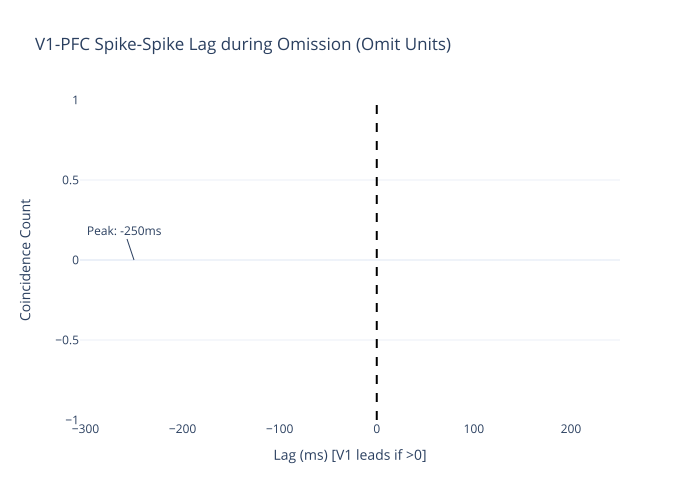

Council Reasoning
Hierarchical Predictive Coding Evidence Arena

The Ontology Tournament is a high-throughput scientific evaluation mission hosted by the Gamma Council. Unlike simulation-based missions, the tournament evaluates the consistency of human scientific literature against the Hierarchical Predictive Coding (HPC) framework.
Manuscripts are processed using a multi-locus MLLM pipeline that extracts evidence across 36 distinct biophysical and cognitive factors, ranging from laminar connectivity to spectral asymmetry.
Evidence is scored by a diverse council of models (Gemma-4, Qwen-3.5, etc.). Disagreement is not treated as error, but as "Epistemic Uncertainty" surfaced in the Hypothesis Space vectors.
We compare Gene Ontology (GO)—the structural/biological constraints—against Label Ontology (LO)—the terminological/descriptive consensus—to identify "Ontology Gaps" in modern neuroscience.